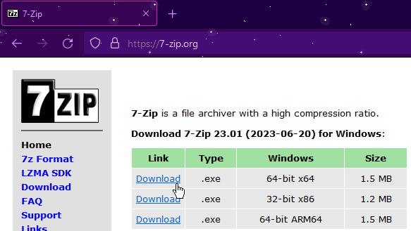
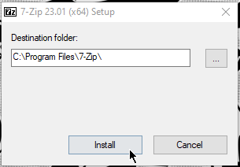
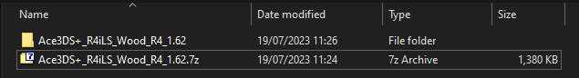
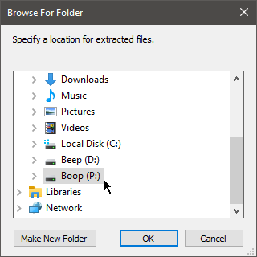

File Extracting
This guide will show you how to extract your kernel files using the recommended tools on the homepage.
From my experience, this is usually a step which people struggle with, which is why it exists on this site!
The language shown in the screenshots is English, though buttons should roughly be in the same place no matter the language your computer is set to.
THIS PAGE ISN'T COMPLETE YET
7-Zip
Installation is very simple:
- Go to https://7-zip.org
-
Download the version for your system, for most people, this will be the 64-bit version.
Double check this is the case for you, especially if you have an older system!

- Open the installer and click yes when the UAC prompt appears. It will say that the publisher is unknown, though 7-zip is safe to install onto your computer!
- Click Install, then click close when the button changes!

Just like that, you have 7-zip installed! Now lets move onto extracting kernel files.
For these examples, I will use the Ace3ds+ kernel.
There are a few ways to do this:
- Extracting the archive, then copying the files to the SD card
- Right click on the archive, then go down to 7-zip. Click 'Extract to "folder name"'.
-
This should create a new folder where the name should match that of the archive.
The files inside of the folder are your kernel files.

This is slightly different with YSMenu, you will need to go into the correct folder for your cart to get your kernel files.
- Extracting directly to the SD card
- Right click on the archive, then go down to 7-zip. Click 'Extract files...'
- A new window should pop up, it will look like this:

- Click the three dots as shown in the picture, then select your SD card in the file menu:

-
Make sure that none of the boxes in this window are ticked, then click OK.
This should extract the kernel files directly to the root of the microSD card.
If you are using YSMenu, I do not suggest doing it this way.
- Extracting directly to the SD card using drag and drop
- Right click on the archive, then go down to 7-zip. Click 'Open archive'
-
The 7-zip file manager should appear.
Select all of the files in the archive, then drag and drop them onto your SD card.

- You can use this method with YSMenu, go through the archive until you are in the correct folder for your cart, then drag and drop all of the files inside of the folder onto the micro SD card!
The Unarchiver
PeaZip